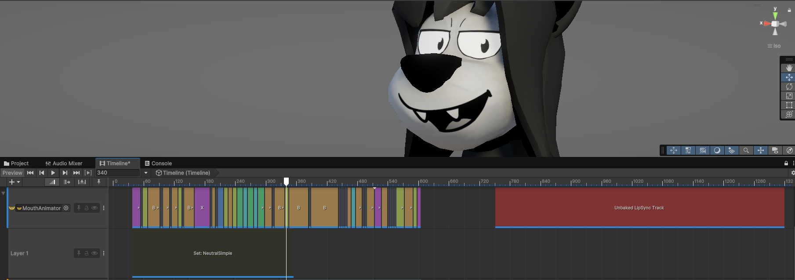

Mouth Track
Manages toggling mouth sheets and switching mouth shapes/poses.
Available Clips
LipSync Clip
Special type of track which allows for generated lipsync. For lipsync options and guides, see the LipSync Page.
Mouth-Shape Clip
Allows you to set a mouth shape based on the MouthShape standard shapes. For ease of use, this clip variant exposes only properties for the industry standard mouth shapes. For extended custom shapes see Mouth Index Clip.
Mouth-Index clip
Sets a mouth shape using the index of the frame to be used directly. This means it can go outside of the standard Mouth-Shapes.
Mouth-Set Clips
Allows you to change the Mouth Collection to a different one (e.g. happy, silent, angry mouth shape collections).